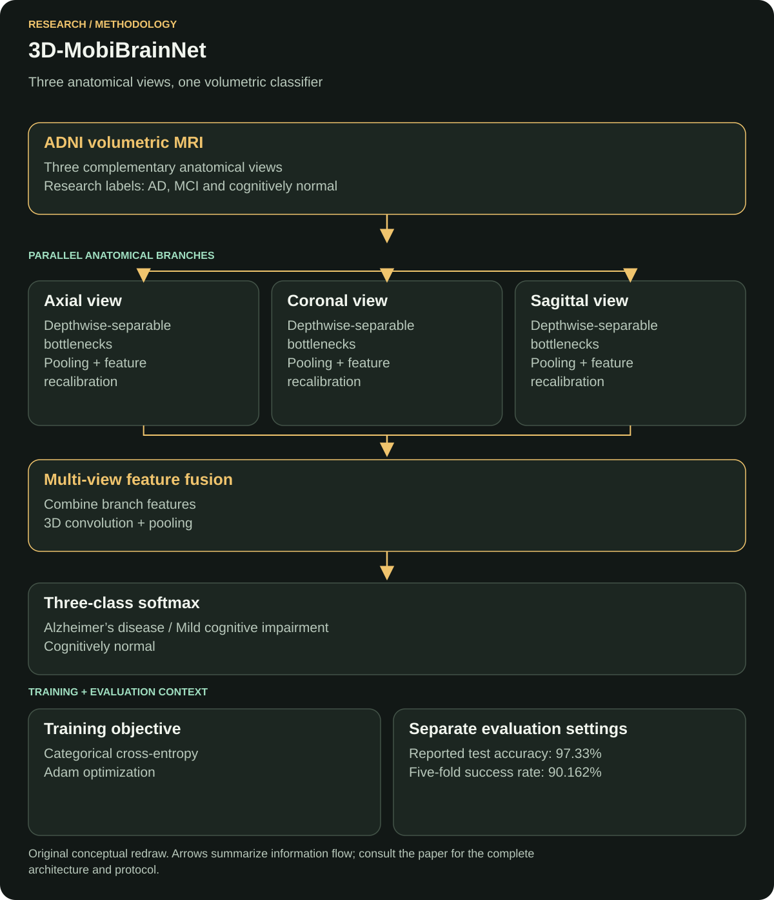

Medical imaging · 3D deep learning
3D-MobiBrainNet: Multi-class Alzheimer's disease classification using 3D brain magnetic resonance imaging
3D-MobiBrainNet examines multi-class Alzheimer's classification from volumetric brain MRI. Its multi-plane design preserves complementary anatomical views for distinguishing Alzheimer's disease, mild cognitive impairment and cognitively normal cases.
Case study updated
Read the original paperProblem
Classify Alzheimer's disease (AD), mild cognitive impairment (MCI) and cognitively normal (CN) cases from brain MRI while retaining information across anatomical views. The research combines multi-class prediction with the memory and computation required to process volumetric images.
Why this matters
Including MCI makes the intermediate category part of the prediction task. It also exposes errors between adjacent categories that an overall disease-versus-normal result can hide.
Preserving complementary MRI views while controlling model size makes this a useful study of the balance between spatial information and computational cost.
Dataset
Source: ADNI brain MRI; labels: AD, MCI and CN. The paper reports an 80% / 20% training/test split and a separate five-fold analysis.
A participant can contribute many correlated slices. Patient-level separation is therefore important when interpreting generalization; the available evidence for this case study does not independently establish a subject-disjoint split.
Evidence: full paper, Sections 3–5 and Table 2.
Method / model
Axial, coronal and sagittal branches use depth-wise separable bottlenecks and feature recalibration. Their features are fused, processed with 3D convolutions, then passed to a three-class softmax head.
The branches extract complementary views of the same scan before the shared classifier integrates their features.


Why this model
Depth-wise separable convolutions separate spatial filtering from channel mixing, reducing the work of a dense convolution. Plane-specific branches capture anatomical patterns from different orientations, while feature recalibration adjusts the emphasis on informative channels.
Fusion brings those representations together before 3D convolution learns their combined spatial structure. This connects efficient local extraction with a shared multi-view classification head.
Loss function
Reported objective: categorical cross-entropy. The reported setup uses Adam, a 0.001 learning rate, batch size 32 and 20 epochs.
Definition for one example: L = −∑k=13 yk log(pk), where y is the one-hot reference label and p is the softmax probability.
Cross-entropy penalizes low probability for the reference category. A confident wrong prediction receives a larger penalty, connecting the probability output directly to the training label.
Evidence: full paper, Table 2 and Section 4.
Evaluation metrics
The study reports accuracy, precision, recall, F1-score, ROC AUC and parameter count.
Accuracy describes overall correctness. Precision and recall expose different error patterns; F1 combines them. AUC describes discrimination across thresholds rather than confidence calibration. Parameter count measures model capacity, while latency and memory require measurements on the intended hardware.
Metric averaging and the unit of evaluation matter when comparing slice-level and subject-level findings.
Baseline comparison
The implemented comparisons include 3D-R(2+1)D, 3D-MC3, 3D-MobileNetV3 and 3D-DenseNet121. Table 6 reports 96.50% accuracy for 3D-MC3 against 97.33% for the proposed model.
The difference is 0.83 percentage points in the paper's test setting. The comparison covers the implemented models, dataset and labels reported in that experiment.
Evidence: full paper, Section 7 and Table 6.
Results
- Reported test accuracy
- 97.33%
- Reported test precision
- 97.41%
- Reported test recall / F1
- 97.33%
- Reported test AUC
- 99.92%
- Reported five-fold result
- 90.162%
- Reported parameters
- 34,145,099
The headline test result and five-fold result belong to different evaluation settings. Keeping both visible shows how the reported performance changes with the evaluation protocol.
Source: publisher abstract and full-paper Table 6.
My exact contribution
I worked on implementation and experiments. The paper's CRediT statement lists my roles as Software and Investigation.
Limitations
The evidence is centered on ADNI. Performance across independent institutions, acquisition settings and patient populations needs separate validation. Processing multiple views with 3D layers also leaves a meaningful resource cost, even when the parameter count is lower than the compared implementations.
Patient-level separation, input-volume construction and preprocessing consistency remain important evidence requirements for reuse. Clinical application also requires evaluation on independent patient cohorts and acquisition settings.
What I would improve now
Proposed next work: build a reproducible evaluation package with subject-level split manifests, saved configurations, repeated seeds and confidence intervals. Keep preprocessing fitted inside each training fold.
I would test on an external cohort, report class-wise errors and calibration, and measure CPU/GPU latency and peak memory. Only after that evaluation would I compare compression or distillation approaches under the same partitions. These proposals extend the published evaluation.
Publication and sources
Ain Shams Engineering Journal, 16(11), 2025, Article 103714.
DOI: 10.1016/j.asej.2025.103714
Publisher abstract and results · Publisher-deposited citation metadata
Author-uploaded full paper: methods, experiments and contribution evidence
Related engineering work
← All research publications · Discuss research or AI engineering